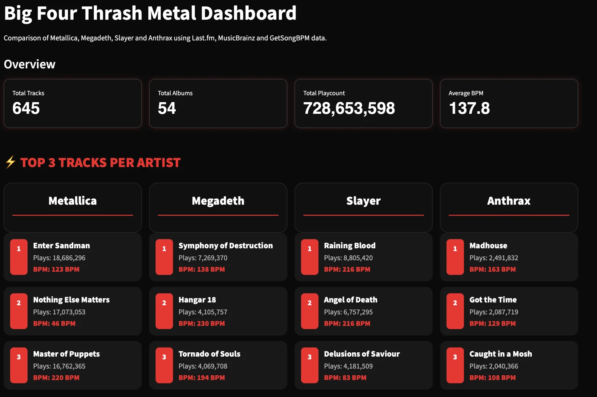

CASE STUDY / ANALYTICS & DASHBOARDS
The Big Four, in data
Turning fragmented music and audience data into an interactive view of four influential bands.

01 / THE QUESTION
Start with the problem.
How can listeners compare the musical characteristics and audience popularity of Metallica, Megadeth, Slayer and Anthrax in one place?
02 / THE PROCESS
From raw data to a useful solution.
Collected and combined MusicBrainz, Last.fm and tempo data; cleaned release and track metadata; and built a Python, Streamlit and Plotly dashboard with filtering and album comparisons.
03 / THE OUTCOME
What the work showed.
Delivered an interactive dashboard for exploring tempo, popularity, tracks and albums. The analysis highlighted Metallica’s audience reach and Slayer’s higher-tempo characteristics.
04 / THE PERSPECTIVE
Interpret the result in context.
Listener and play counts reflect the source platforms and collection period. Release matching and missing tempo data affect comparisons.